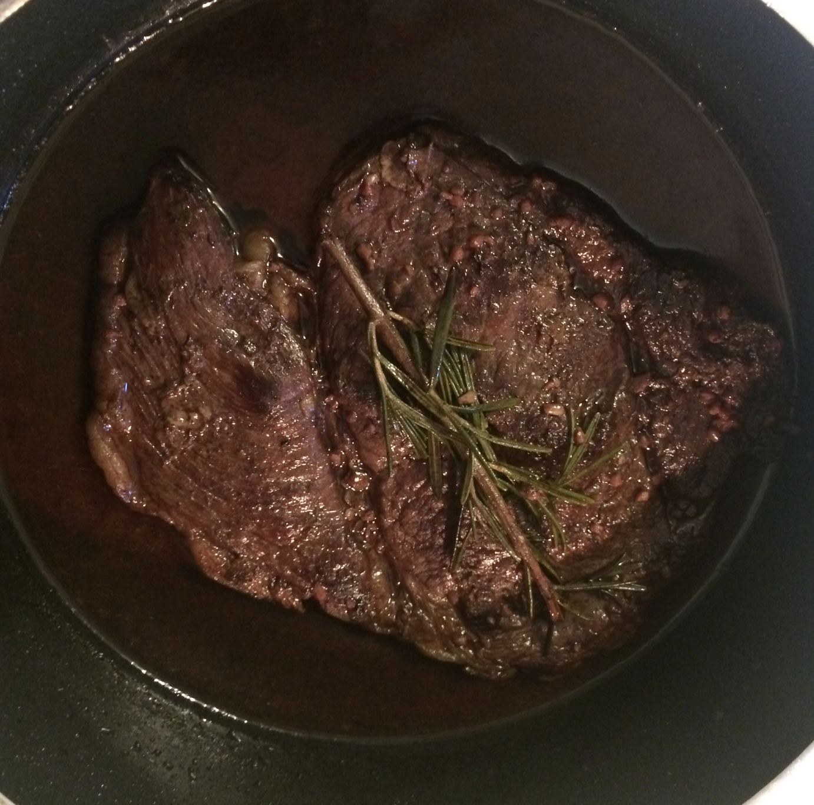

Description
Delicious peace of meat cooked
Ingredients
- red wine
- salt
- rosemary
- New York strip steak
Steps
- Combine the red wine, salt and rosemary in a small bowl. Let stand at room temperature for 2 to 3 hours.
- Heat a large griddle or cast-iron skillet over high heat. Place the steaks on the hot pan, and cook for about 8 minutes per side, or to desired degree of doneness. The internal temperature should be at least 145 degrees F (62 degrees C) for medium rare. Pour in the wine mixture, and allow it to boil for a minute. Serve steaks with sauce on a deep platter.